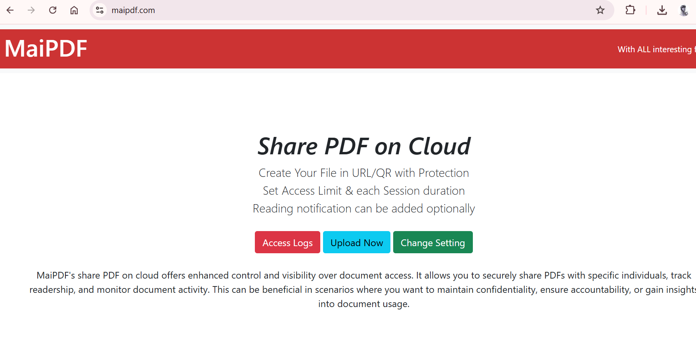

为什么要将PDF文件做成网址链接？
在信息传递和文件分享过程中，直接发送PDF文件可能会因为文件大小、附件限制或者无法追踪访问情况而带来不便。而将PDF文件转化为一个可以分享的网址链接，不仅能避免这些问题，还能带来更多的灵活性。
使用MaiPDF将PDF转化为网址链接的好处
生成专属链接
通过MaiPDF，上传PDF文件后，您会获得一个独一无二的分享链接。无论文件多大，都可以通过链接分享给他人。
无文件大小限制
生成的链接无需担心附件大小问题，上传完成后，所有接收者都可以通过点击链接访问PDF文件。
快速分享，多渠道传播
通过生成的链接，您可以将文件轻松分享给多个接收者，通过社交平台、邮件、短信等多种方式传播文件。
设置文件的访问权限
除了方便分享，MaiPDF还允许您设置文件的访问权限。例如，您可以设置访问密码、查看次数限制，甚至对特定接收者进行权限管理，确保文件的安全性。
设置密码保护
您可以为生成的链接设置一个密码，只有输入正确的密码，接收者才能访问文件。这样可以保护文件的隐私和安全。
设置查看次数限制
您可以设定每个链接的查看次数。文件访问超过设定次数后，链接将自动失效，防止文件被无限制地查看或转发。
实时查看文件访问情况
通过MaiPDF，您可以随时查看文件的访问记录，了解文件被查看的次数和查看者的信息，确保文件的传播符合您的预期。

如何将PDF文件做成网址链接
步骤一：上传PDF文件
首先，在MaiPDF网站上传您的PDF文件。支持各种格式的PDF文件，不管是小文件还是大文件，MaiPDF都能处理。
步骤二：生成链接
上传后，MaiPDF会自动为您生成一个专属的文件分享链接。您可以立即复制链接并通过各种渠道进行分享。

多种方式快速分享
您可以通过社交媒体、即时通讯工具、邮件等多种方式将链接分享给其他人，文件分享更加方便快捷。

控制文件的访问权限
MaiPDF允许您设置文件访问权限，比如设置查看次数限制、设定访问密码等，确保文件不会被滥用。